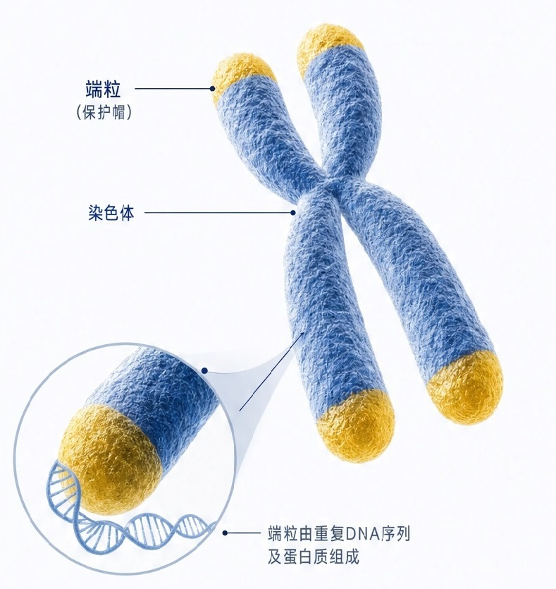

端粒：染色体的“保护帽”

端粒如同鞋带末端的塑料套，防止染色体磨损、粘连或断裂，维持基因组稳定性。
年轻力精准评估健康管理报告 | 05/10
端粒位于染色体末端，是由重复DNA序列及蛋白质组成的“保护帽”，可保护染色体免受损伤、防止基因信息丢失。随着细胞分裂和年龄增长，端粒会逐渐缩短，当缩短到临界长度时，细胞将进入衰老或凋亡状态。

端粒损耗与慢性炎症等标志相互影响、相互促进，共同推动衰老进程。通过综合评估这些标志，有助于更全面地了解个体衰老状态。
* 本报告仅供参考，不作为疾病诊断依据。如有不适，请及时就医。